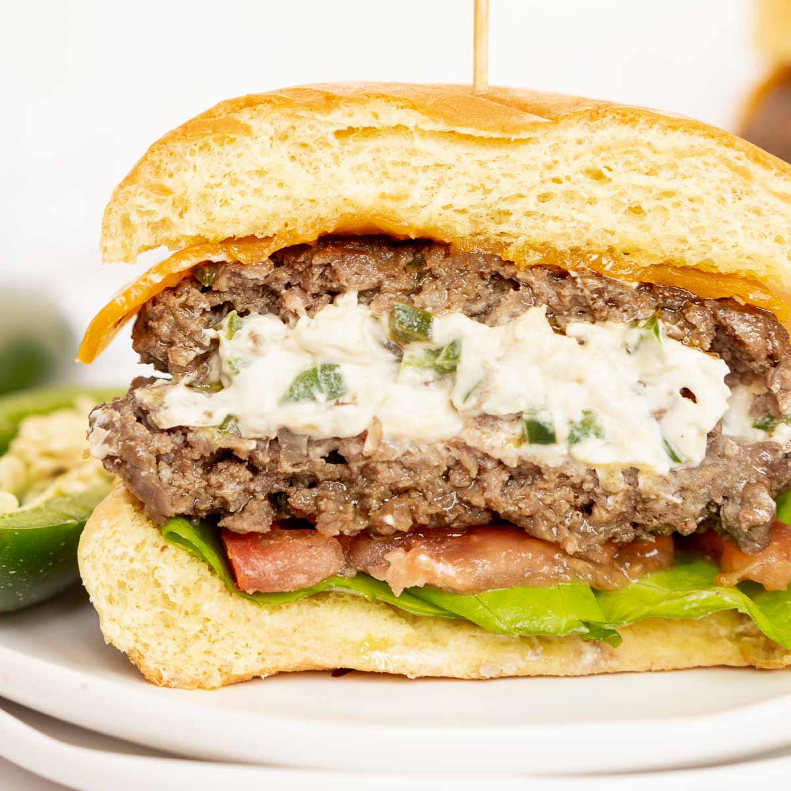

Serano & Cream Cheese Burgers
Home

Description
These are the best hamburgers I've ever had.
They are more or less your standard smash burger
but what really brings this dish to life is the cream
cheese filling! Made with caramelized serano peppers and
cream cheese, this feeling brings a spicy, creamy and
slightly sweet flavor to bring a delightful twist to a
classic burger.
- 80/20 Beef
- Hamburger Buns
- Serano peppers
- brown sugar
- olive oil
- cream cheese
- Salt
- pepper
- lettuce
- tomato
- onion
- Separate your beef into 1/4oz portions and salt and season
it with salt and paper. Let sit and come to room temperature
while we take care of the rest.
- Cut up all of your vegetables as you like.
Slice your tomatoes, lettuce and onions.
Dice your serano peppers.
- Add a little EVOO to a sauce pan and add the peppers.
Caramelize the peppers by adding a tiny bit of water
and the brown sugar. Cook slowly on low heat to
get a good caramelization. Once caramelized, add
the cream cheese and stir.
- While the peppers caramelize, bring your cast iron
skillet to a high temperature.
- Smash your burgers on your skillet then plate your food.